Maine
June 2011

In June 2011 I traveled through Maine.
The trip mixed lobster dinners and coastal overlooks with the Penobscot Narrows Bridge, Winter Harbor Lodge No. 192, other lodge stops, woods roads, and harbor towns.

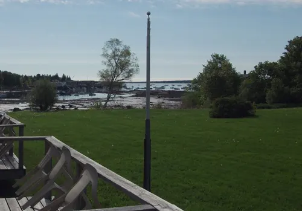


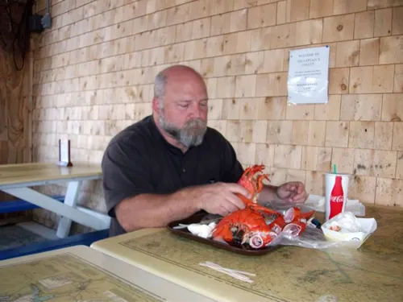

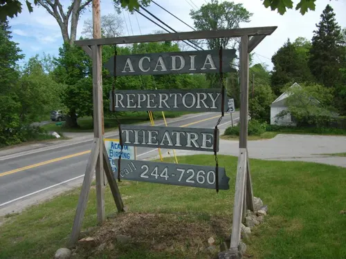

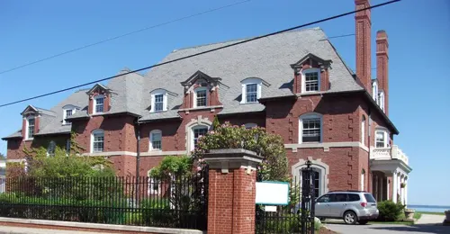

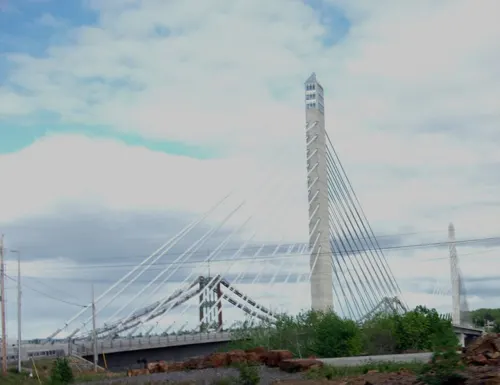

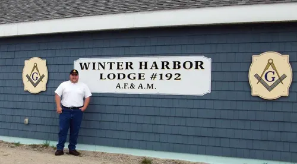

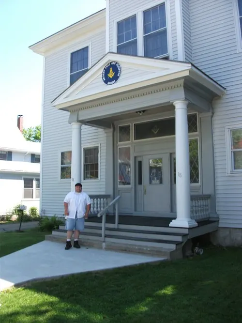

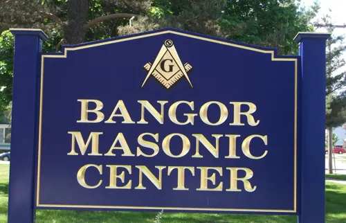

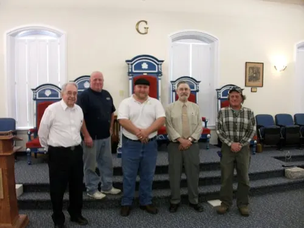

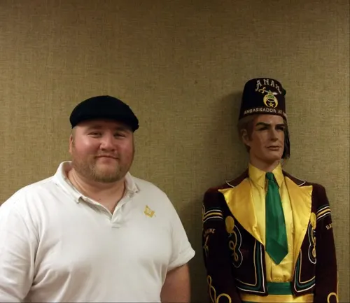

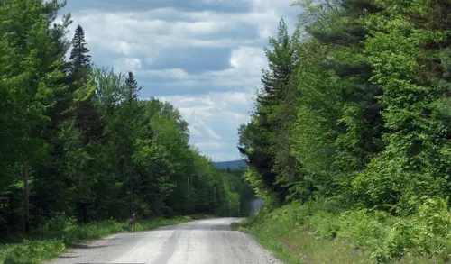

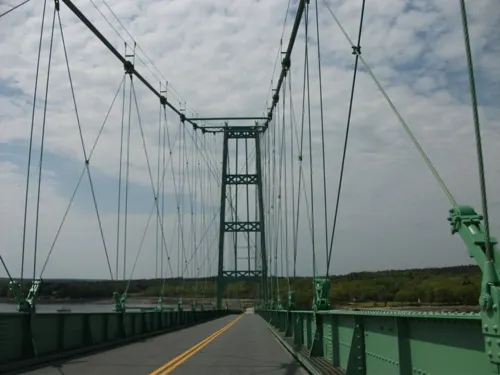

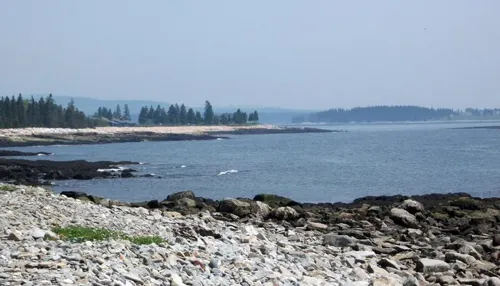

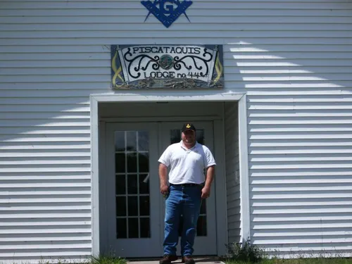

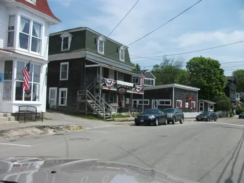